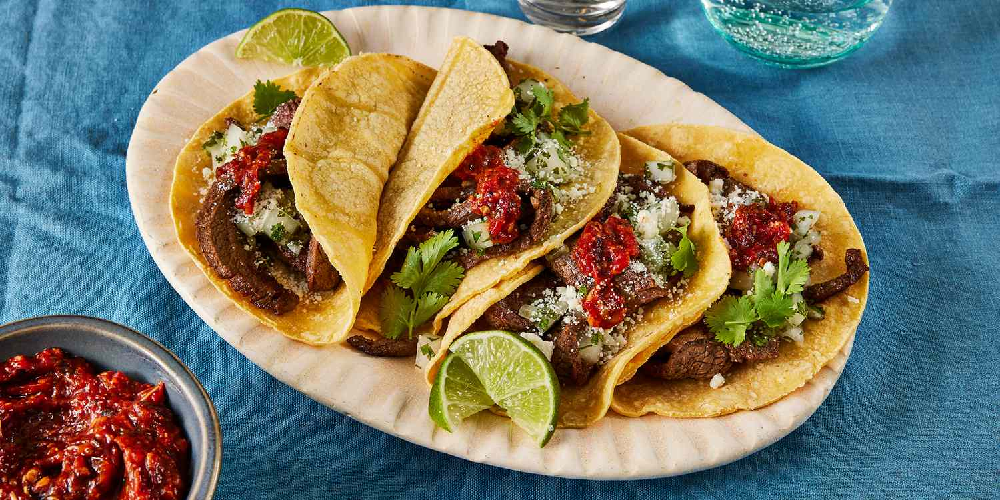

Slow Cooked Chicken Tacos

Description
Indulge in the mouthwatering delight of slow-cooked chicken tacos, where tender, succulent chicken
is infused with a symphony of spices and flavors over hours of gentle simmering. Picture juicy, shredded chicken,
seasoned to perfection, nestled in warm tortillas and topped with vibrant salsa, creamy guacamole, and crisp lettuce.
With each bite, experience a harmonious blend of savory goodness that will tantalize your taste buds and leave you craving more.
Slow-cooked to perfection, these tacos are a culinary journey worth savoring.
Ingrediants
- Chicken breasts
- Two or three onions (preferably red)
-
Seasoning:
- Cheese (either shredded Mexican blend or crumbling cheese)
- Small tortillas
- Lime
- Cilantro, tomato, lettuce, other desired taco contents
Steps
- Quarter two onions and spread on the bottom of a slow-cooker.
- Place chicken breasts on top of onions.
-
Season slow-cooker contents liberally with adobo seasoning, paprika and any other desired seasonings,
squeeze half of a lime too if desired.
-
Let cook on low for 8 hours. Cooking on high for less time is possible as well,
but a slower cook is preferable.
- Dice the tomato, cilantro, any lettuce and the third onion for taco contents.
- Shred chicken with forks once cooked. Optionally add a dash more seasoning for taste or appearance.
- Add chicken, cheese and all the diced ingredients to tortillas.
- Squeeze remainder of lime over finished product.